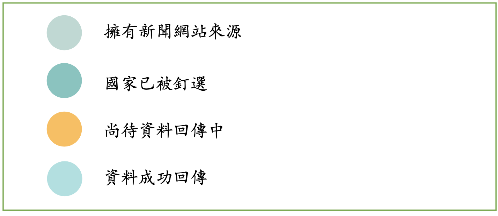

操作說明
先釘選欲查詢的國家再輸入關鍵字搜尋，釘選結果會顯示所選擇國家與關鍵字相關的報導。
默認搜尋國家
若無釘選國家則以以下八國作為默認搜尋對象：
台灣、日本、韓國、中國、俄羅斯、英國、美國、法國。
歷史上的今天
地圖左上角有日曆按鈕，點擊可觀看過去各國的頭條。
註：目前僅有今年8月3日到現在的新聞。
圖例

常見Q&A
1. See OverSea在做什麼？怎麼用？
能夠一個網站快速查詢各國的新聞，並能看出相同議題他國關心的部分。
例如：查「安倍晉三」時，台灣新聞著重哀悼會、俄羅斯著重生前政績、法國一篇描述安倍曾高票當選，或許是想表示他生前受到民眾喜愛。
2. 首頁顯示的新聞怎麼來？
首頁的新聞為各國新聞來源的頭版，可以看到該國當下關心的事務，每天更新一次。
3. 新聞來源是怎麼選的？
以當地發行量高的新聞報紙或收視率高的新聞電視台為主，以能免費顯示文章全文為輔。
4. 關鍵字查詢如何使用？
請先選取欲查詢國家，再到右上角輸入想查詢的關鍵字，按下放大鏡，就完成查詢了唷！
5. 如何變換語言？
選擇完欲變更語言後，請再搜尋一次關鍵字。